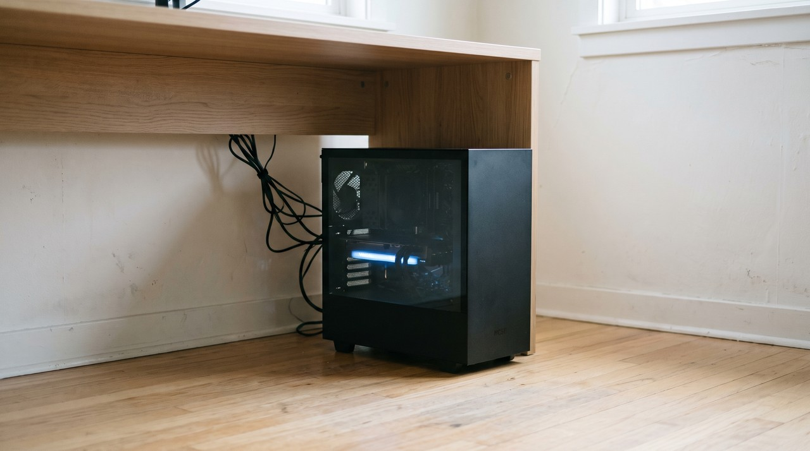

Zonos is a free text to speech model from Zyphra that clones a voice from a short recording. Its Apache 2.0 licence allows commercial use, and it speaks English, Japanese, Chinese, French and German at 44 kHz with settings for emotion, pitch and speed. The catch is the setup: the official code supports Linux and macOS, and Windows only works through a community fork that needs an NVIDIA card with 6 GB or more.
| Zonos v0.1 | GPT-SoVITS | VoiceClone | |
|---|---|---|---|
| Can it copy your voice? | Yes, from a short clip, the README suggests 10 to 30 seconds | Yes, a 5 second clip works, and about 1 minute lets it fine tune | Yes, it learns from 1 to 3 minutes of your recording |
| Licence | Apache 2.0, you may sell what you make | MIT | Free tier, then $49 once |
| Windows | Not official, a community fork only | Ready made Windows package | Windows 10 and 11 app |
| Hardware | NVIDIA card with 6 GB or more, a processor is much slower | A graphics card helps a lot | Faster with an NVIDIA card, a processor works |
| Languages | English, Japanese, Chinese, French, German | English, Japanese, Korean, Cantonese, Chinese | English |
| Extra controls | Emotion, speaking rate, pitch, audio quality | Speed and reference choice | A word editor to fix single words |
Written by Inam. VoiceClone, the app in the last column, is mine, so take that column knowing I have a stake in it. You can find my other engineering work on designesh.com. Last updated 3 November 2026.
You have probably seen Zonos clips where the cloned voice sounds happy, then sad, then whispers, and you want to try it with your own voice on your own PC. That makes sense, because Zonos is free and its licence is one of the most open you can find.
Zonos can clone your voice, but on Windows it is a project, not an install. The official code is written for Linux and macOS. Windows works through a community fork, and it needs a recent NVIDIA graphics card and a few developer tools installed first.
What is Zonos TTS?
Zonos is a text to speech model, so you type text and it reads it out loud. A company called Zyphra released it in February 2025 as version 0.1, and they labelled the release a beta. There are two versions of the model, a transformer and a hybrid, and Hugging Face lists each one at 2B parameters. Parameters are the numbers a model learns during training.
The model card on Hugging Face says it was trained on more than 200,000 hours of speech across many languages. It speaks English, Japanese, Chinese, French and German, and it generates audio at 44 kHz, which is a high quality sample rate. The licence is Apache 2.0, a very open licence that lets you use it commercially.
Can Zonos clone your voice?
Yes, Zonos does zero shot cloning. This means it copies a voice from a recording without training on it first. You give it a sample of the speaker and it builds a speaker embedding, a small set of numbers describing how that voice sounds, and then it reads your text in that voice.
The official README recommends a speaker sample of 10 to 30 seconds. The example code on the model card uses a 5 to 10 second clip, so a short clip works fine, but a clean 20 second recording is a safer start. There is also a feature called an audio prefix, where you give it the start of a clip to continue, and the README says this helps with things like whispering.
What can Zonos do that other free models cannot?
Control is the real strength of Zonos. It lets you set the speaking rate, the pitch, the audio quality, and emotions like happiness, anger, sadness and fear. Most free cloning models only copy the voice and the mood of the sample, so if your sample is calm, the output is calm. Zonos lets you ask for a different mood on top of the same voice.
Two examples make this clear. If you narrate a calm tutorial, almost any cloning model will work, and the extra controls do not matter much. If you make a short story with a scared character and an angry one, Zonos can push one cloned voice into those moods. GPT-SoVITS does not offer that as a setting.
Speed is fine on strong hardware. The README gives a real time factor of about 2 on an RTX 4090, which means it makes about 2 seconds of audio for every second it works. It is slower on a smaller card, and the README says it is much slower on a processor and probably not usable for interactive work.
Can you run Zonos on Windows?
Not officially, because the system requirements in the README list Linux, preferably Ubuntu 22.04 or 24.04, and macOS. For Windows it points to a community fork called Zonos-for-windows, and it calls that support experimental.
The fork has a one click install script, but the one click comes after several setup steps. Its README asks for CUDA 12.4, which is NVIDIA's toolkit for running models on the graphics card, and Visual Studio 2022 with its C++ compiler. It also asks you to open PowerShell as administrator and run Set-ExecutionPolicy Unrestricted, so that its scripts are allowed to run. Then you run install-uv-qinglong.ps1 and, after that, the script that opens the web interface.
That policy change matters, because Unrestricted turns off a Windows safety setting that blocks unknown scripts, so if you change it, set the policy back when the install is finished. The other route is Docker, a tool that runs a small Linux system inside Windows, where the official repo starts the interface with docker compose up.
What hardware does Zonos need?
For hardware, the README asks for an NVIDIA graphics card with 6 GB or more of video memory. The hybrid model also needs a 3000 series card or newer, so an older card can only run the transformer version. The model also needs a program called eSpeak to turn words into sounds before it speaks them.
If you have an RTX 3060 or better, you can run it. If you have a laptop with no NVIDIA card, Zonos will technically start on the processor, but you will wait a long time for each sentence. Check your graphics card before you spend an evening on the install.
Zonos or GPT-SoVITS for your own voice?
They are good at different things. Zonos is better when you want emotion and pitch control, and when you need French or German. Its instant clone is quick to try once it is running, and the Apache 2.0 licence is as open as GPT-SoVITS's MIT licence if you sell your work.
GPT-SoVITS is better when you want the voice to stay close to the real person over a long read. It can clone from a 5 second clip, but its real advantage is fine tuning on about 1 minute of the same voice. That keeps more of the accent and rhythm. It also has a ready made Windows package, which I walk through in installing GPT-SoVITS on Windows.
My honest view: if you like experimenting and you have Linux or a strong NVIDIA card, Zonos is worth an evening. If you want your own voice for long narration on Windows, start with GPT-SoVITS. I compare the other free options in the best free voice cloning tools, including F5-TTS, whose official model is non commercial.
Where does VoiceClone fit?
I built VoiceClone for people who want their own voice on Windows and do not want this kind of setup. It is an app for Windows 10 and 11 that runs GPT-SoVITS for you, fully offline, so nothing you record ever leaves your disk. You start it by double clicking START VoiceClone.bat, and you never touch Python, CUDA or a PowerShell policy.
The app asks for 1 to 3 minutes of your voice and checks the recording first, so a noisy or clipped take is caught early. After that, Make it perfect trains the voice right on your PC. It is quicker with an NVIDIA card, and it still finishes on a plain processor.
Its limits, plainly: it speaks English only, it cannot sing, and it has no emotion sliders like Zonos. The free tier lets you clone and fully train one voice, then make 3 generations so you can hear the result. The $49 one time license is a single payment with no subscription, and it adds retraining, the word editor, exports and unlimited length. Use it only on your own voice, or on a voice whose owner has said yes in plain words. To try it, grab it from the download page.
FAQ
Is Zonos TTS free for commercial use?
Yes, the Zonos code and both model versions are under the Apache 2.0 licence, and that allows commercial use. You still need permission from the person whose voice you clone.
How long a clip does Zonos need to clone a voice?
The official README recommends a speaker sample of 10 to 30 seconds. The example on the model card uses a 5 to 10 second clip, so a short, clean recording is enough to try it.
Does Zonos work on Windows?
Only through a community fork called Zonos-for-windows, and the official repo calls that experimental. It needs CUDA 12.4, Visual Studio 2022 with its C++ compiler, and an NVIDIA card with 6 GB or more.
Can Zonos run without a graphics card?
It can run on a processor if you have enough free memory, but the README says it is much slower and probably not suitable for interactive use. You need an NVIDIA card for real work.
Sources: the Zyphra Zonos README on GitHub, the Zonos-v0.1-transformer and Zonos-v0.1-hybrid model cards on Hugging Face, the Zonos-for-windows README on GitHub, all read on 3 November 2026, the GPT-SoVITS README on GitHub, and the VoiceClone product page on myvoiceclones.com.
Hear your own voice come back.
The free Windows app clones and fully trains one voice, yours, on your own PC. No account, no upload, and the download starts right away.